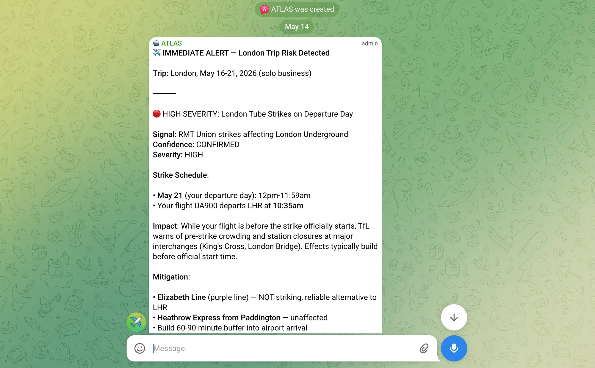

ATLAS paid back his build time faster than any agent I've built, while being the least powerful version of himself. ATLAS helped me triage several incidents that threatened to disrupt my recent trip to London, but he runs in a sandbox with no access to my email, my calendar, or any of the information that would make him maximally useful (and dangerous) in the real world. He still got me through a busy week of work travel without constantly refreshing my browser tabs.
The Friction
I love to travel. But sixty countries in, I've never been fully satisfied with a single travel tool. They all feel like sales funnels with a search box bolted on. So for decades I've planned manually. Generative AI (Claude and Perplexity) has become a fixture in my process, but that's a reactive pattern. Sometimes travel requires something more proactive. Exhibit A, headlines like: "Lufthansa cuts 20,000 flights as war squeezes fuel prices and supplies." Details were thin, cancellations were being announced on a rolling basis, and I had several trips to Europe on the calendar. A clear setup for frustration. My old approach would have been to refresh the same browser tabs every morning. After doing this for a week, I decided I'd rather build something instead.
My Priors
Going in, I expected monitoring to be the easy part — the web is full of news about disruptions. The hard part would be filtering signal from noise. This isn't my first agent, so I expected I'd have to take several runs at it to get it right, but I had a work trip to London in just a few days so, no time like the present!
I did ask myself whether this needed to be an agent at all. A daily Google Alert would have given me UK news; an RSS feed for FlightAware would have covered specific flights. But this wouldn't be quite right. What I really wanted was something that knew where I was going, could run continuously in the background, could think expansively about what might disrupt my travels, could rank each risk by how much it should matter, and then could track individual issues through to resolution instead of just notifying me again and again. That's not search; that's a small operations function. So I built an agent.
What I Actually Built
ATLAS runs locally on a Mac Studio (more on that choice in a future post.) I primarily communicate with my agents via Telegram, so in this case I just cut and paste snippets of my itinerary (flight details or hotel dates) into the chat. ATLAS normalizes the info and builds a progressive profile of each trip in a simple JSON file.
A cron job runs periodically and searches for signals that might affect upcoming trips: public holidays, airport disruptions, travel advisories, weather as the trip gets close. Each potential finding gets two ratings: confidence and severity. These scores are combined and weighed against a dynamic threshold that tightens as each trip approaches. Imminent signals push to my phone immediately. The rest queue for a weekly digest.
The surprise was how well this worked from the start. To be fair, ATLAS isn't my first agent, so I already had OpenClaw deployed, local models loaded, my security posture tuned, Telegram wired up, and my key preferences and guardrails captured in template personality files. ATLAS came together in about an hour, built with Claude, on the framework I'd already developed for prior agents. The novel work here was the tracking model: independent confidence and severity axes, structured fingerprints so the same disruption described differently on consecutive days resolves to the same open issue, and regular re-alert milestones. Despite my initial skepticism, I didn't need to enumerate all of the issues I did and didn't care about. ATLAS picked up the signal right off the bat.
The Upside
Two days before my London trip, ATLAS surfaced three issues on his first run. The UK had upgraded its terror alert to severe, with guidance to avoid crowded sites (I was headed out for a conference, so good to know.) Heathrow was running hundreds of delayed flights due to a luggage-handling problem, unlikely to affect my arrival but a risk for the return. And a tube strike was planned for the day I landed, which would have turned the trip from LHR to Excel into a slow-motion mess.

ATLAS tracked all three issues day by day. When the airport recovered, he closed the issue. When the tube strike was called off the night before my flight, he pushed an update saying I could sleep in instead of leaving at 4 a.m. for the Elizabeth Line backup route he had already mapped. I wasn't living in my Chrome tabs, refreshing news sites all week. The digest just showed up every morning.
The Asterisks
The honest limitation is trust. ATLAS lives in a sandbox with no access to my email, my calendar, or anything sensitive. Other agents I've built have their own Google accounts so I can forward them emails, but I didn't set this up for ATLAS. The sandbox approach is designed to limit the blast radius if something goes wrong. While it would be nice and easy to forward airline itineraries or hotel confirmations to ATLAS, these emails typically contain enough information (e.g. name and booking code) to alter or cancel reservations. I don't yet trust the homegrown agents I can build in an hour with the keys to that castle. This is why I manually paste sanitized trip details into Telegram.
To be clear about what "trust" means here: it isn't infrastructure trust. The hardware sits on my desk in my home office. I own it. The trust gap is the model. While ATLAS was built with Claude, he runs on Qwen 3.5 27B, an open-weight model from Alibaba (I addressed shifting token economics in a prior post.) Qwen is pretty impressive for a model that fits in a 28GB RAM envelope, but let's just say I've noticed that it's very eager for autonomy (I ask a question and it strings together a long series of autonomous actions) and its tool calling is less than perfect (maybe an unexpected result 5% to 10% of the time.) As time goes to infinity, there are going to be some missteps. And that's before I even worry about a risk like prompt injection.
The Scorecard
On the dimensions that matter: build effort was negligible, just an hour on top of infrastructure I'd already deployed. This is the fastest time-to-value of anything I've built. Time saved was modest, maybe fifteen minutes a day of news-checking. The real value was peace of mind: I knew I'd be alerted to any new issues, and that I'd receive periodic updates as existing issues evolved or were resolved.
Verdict: I'd build it again, and I'd recommend it to anyone with multiple trips on the calendar who's tired of checking the same news sites every morning. I've already queued up my summer travel for ATLAS to track. But building ATLAS made me think I shouldn't have had to build him at all. Clear value out of the gate, but so much less convenient than he should be because of the trust and access issues. This is an obvious candidate for Google to build into Gmail, or for another provider to offer as a hardened plugin. Hopefully a product manager somewhere is working on that.
# UNDER THE HOOD
AGENT NAME : ATLAS
WHAT IT DOES: Monitors upcoming trips for disruptions, tracks
issues through to resolution, and delivers proactive
alerts and weekly digests via Telegram.
RUNS ON : Mac Studio M4 Max, 40-core GPU, 64GB unified memory
BUILT WITH : Claude Sonnet 4.6
RUNTIME : Qwen 3.5 27B via Ollama & OpenClaw (fallback: Gemma4 26B)
TOOLS : Telegram (interactive intake + alert delivery),
Brave Search API (daily research)
AUTONOMY : Human-in-the-loop to initiate trip coverage,
fully autonomous for research and alerting
MEMORY : Persistent structured state in JSON files (itinerary,
open issues, digest queue, monitoring config), plus a
long-term memory.md + nightly dreaming for pattern
recognition
BUILD TIME : ~1 hourDrafted with Claude Opus 4.7 · Hand crafted in Google Docs · Header image generated in Google Imagen 3